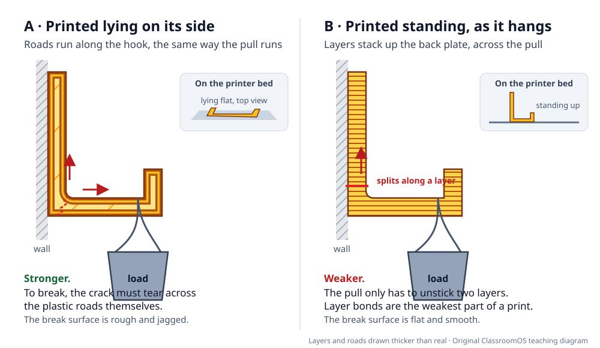
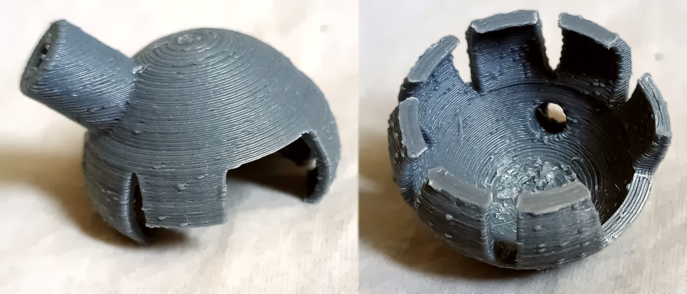
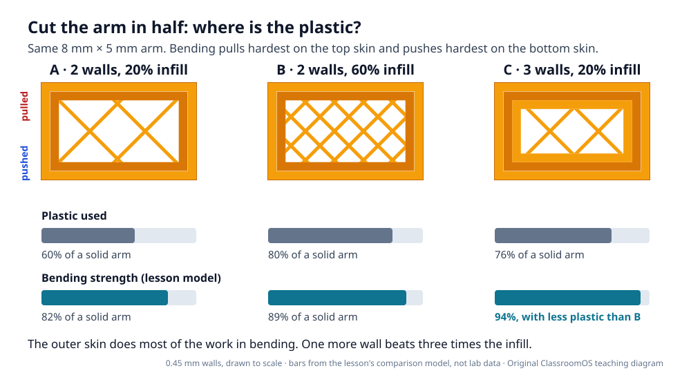
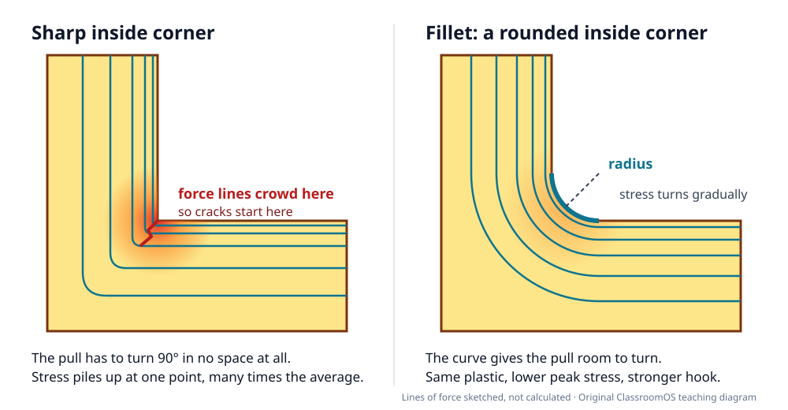
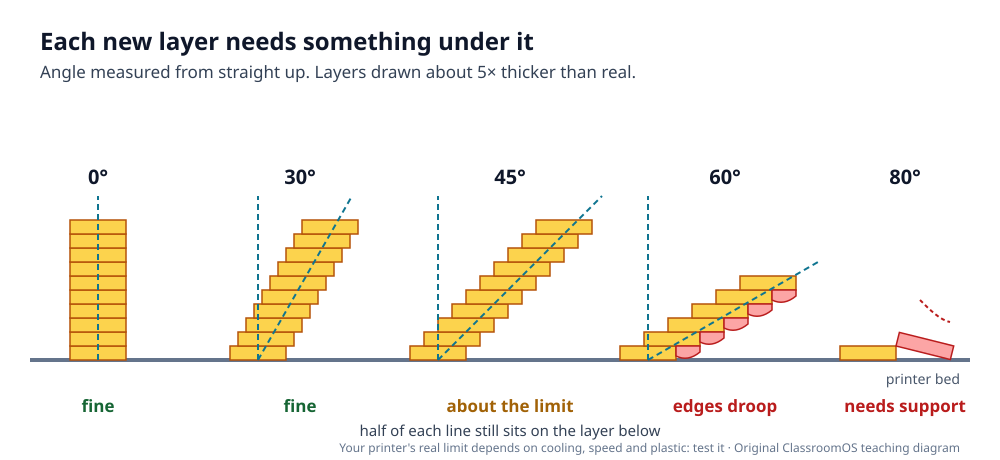
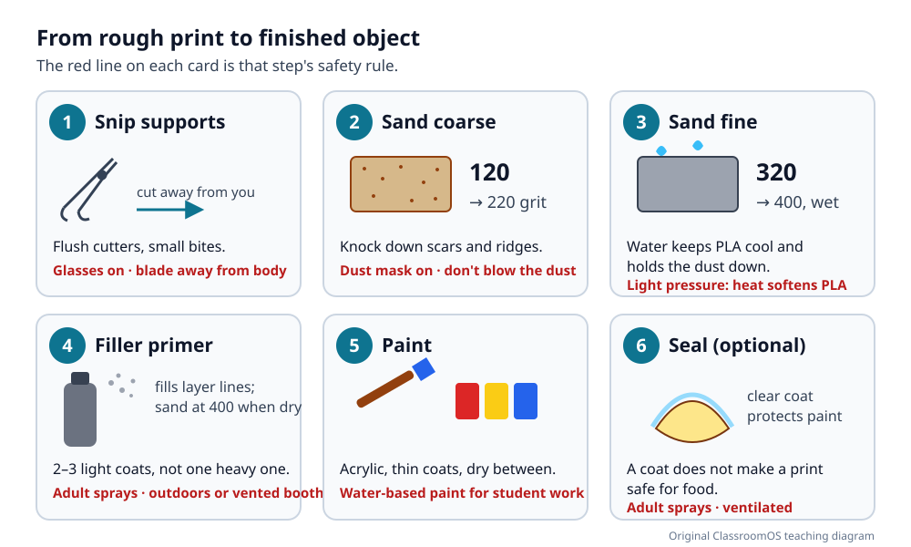

3D Design · Make it real · Materials & Strength
Why Printed Parts Break, and How to Make Them Not
Print one hook file twice on the same printer from the same spool, and one copy can hold far more than the other. The plastic is the same. What changed is how the part sat on the bed, how thick its skin was, and the shape of one inside corner. In this lesson you predict where a printed hook will break, then break two real ones and write down the numbers.
Start with a real object: a wall hook
A hook is the simplest useful tool you can print, and it is the useful trait in this quarter's Trio Challenge. It also fails in a way you can see. A load hangs off the end of the arm, so the arm bends. Bending pulls hardest on the top of the arm and pushes hardest on the bottom, and the biggest pull of all lands on the inside corner where the arm meets the back plate. Almost every printed hook that breaks, breaks there.
Four design decisions decide how much it holds before that happens:
1 · The weak direction: between the layers
A filament printer (FDM, fused deposition modeling) draws a part one flat layer at a time. Inside a layer, the nozzle lays continuous lines of melted plastic called roads. A road is one long piece of plastic. But each new layer lands on a layer that has already cooled a little, so the bond between layers is usually weaker than the plastic along a road. That makes a printed part anisotropic: its strength depends on the direction you pull it.
How much weaker? Published tests on PLA bars pulled across their layers mostly report somewhere between about a quarter and three quarters of the strength of bars pulled along them. The number depends on the printer, temperature, cooling and speed, which is exactly why you will measure your own.



2 · Walls beat infill
A slicer turns your solid model into a hollow one. The outside gets a few solid lines called walls (also called perimeters or shells). The inside is filled with a sparse pattern called infill, set as a percentage. When a part bends, the plastic farthest from the middle does most of the work: the top skin is stretched and the bottom skin is squeezed, while the middle hardly changes length. That is the same reason bike frames are tubes, not solid rods.

How thin can a wall be?
A wall is built from whole lines, and a line is about as wide as the nozzle: a 0.4 mm nozzle usually lays lines about 0.4 to 0.45 mm wide (the slicer's line width). So:
Check the slicer's layer preview: a wall thinner than one line can disappear completely, and the preview shows what the printer will actually draw.
3 · Corners and overhangs
Round the inside corners
When a pull has to turn a sharp inside corner, the stress piles up at the corner point. Engineers call this a stress concentration. A fillet (a rounded inside corner) gives the pull room to turn. Engineering reference charts (Peterson's) show the peak stress at a stepped bar dropping a long way as the corner radius grows from almost nothing to about a quarter of the bar's thickness, then levelling off. On a 5 mm-thick hook arm, a 1–2 mm fillet does most of the good.

Keep overhangs at about 45° or steeper
Each layer must rest on the one below. If a wall leans so far that a new line has mostly air under it, the line droops. A common starting rule is that an overhang up to about 45° from vertical prints without support, because at 45° each new line still has about half its width resting on the layer below.

Hook Load Lab
This is the hook you will print later: a 40 mm back plate, an arm 5 mm deep reaching 30 mm out, a little lip at the tip, all 8 mm wide. Choose how it is printed, then press Hang the bucket and watch washers go in until it fails. Pin each design to the comparison table so you can see which change mattered most.
| Orientation | Walls | Infill | Fillet | Plastic | Index | Plastic used | Breaks at |
|---|
Press Pin to comparison to add the current design.
Try this: Start from Typical first try. Change only the orientation, then only the fillet, then only the walls. Which single change raised the index most? Which used the least extra plastic to do it?
4 · Choosing a filament
Every spool lists its own temperatures on the label; use those first. These are typical ranges from the Prusa Knowledge Base and are a starting point, not a setting to copy blindly.
| Filament | Nozzle / bed | Feel | Gets soft around | Good for | Watch out |
|---|---|---|---|---|---|
| PLA | about 200–215 °C / 50–60 °C | Stiff and strong, but snaps with little warning | 55–60 °C | Most class prints: models, prototypes, desk tools, hooks indoors | Sags in heat. A PLA phone mount on a car dashboard can droop on a sunny day. |
| PETG | about 230–250 °C / 70–90 °C | A little less stiff, much tougher: bends and whitens before it breaks; layers bond well | about 80 °C | Clips, hinges, outdoor parts, parts that get knocked about | Strings between parts; weaker bridges and overhangs; can stick too hard to some smooth beds. |
| TPU | about 230–245 °C / 60–75 °C | Rubbery and flexible; very hard to break | varies by brand | Bumpers, grips, phone cases, flexible hinges, tyres for robot wheels | Print slowly (around 20–30 mm/s). Useless where a part must hold its shape, like a hook. |
| ABS / ASA teacher only | about 240–260 °C / 90–110 °C | Tough; ASA also resists sunlight | about 100 °C | Hot or outdoor parts the teacher prints for the class | Gives off fumes and a strong smell; ABS releases styrene. Needs an enclosure and a ventilated room. Warps without one. |
5 · Finishing: from rough print to finished object
A print straight off the bed has support scars and visible layer lines. Finishing is a sequence: each step makes the surface smoother than the last, and each one has its own safety rule.

- Remove supports. Let the part cool first. Wiggle big supports free by hand; snip small ones with flush cutters, in small bites. Hold the part on the bench, not against your body.
- Sand coarse, then fine. Grit numbers count how fine the paper is: bigger number, finer paper. Start around 120–220 to knock down scars and ridges, then 320–400. Sand PLA wet and gently: friction heat can soften it and smear the surface.
- Filler primer. Filler primer is a thick spray primer that fills layer lines. Two or three light coats, dry, then sand at 400. It shows every flaw, so repeat where needed.
- Paint. Water-based acrylics in thin coats, dry between coats. Then an optional clear coat to protect it.
Safety rules for every finishing session
- Cutters away from your body. Cut away from your hand, chest and lap. Support plastic snaps and flies, so wear safety glasses.
- Adults handle hot parts. The nozzle runs above 200 °C and the bed can be 60–110 °C. Students wait until the teacher has removed the part and it has cooled.
- Dust masks for sanding. Wear a dust mask for dry sanding, sand wet when you can, wipe the dust up with a damp cloth, and never blow it around.
- Sprays are for adults, outdoors. Primer and clear coats are sprayed by an adult outdoors or in a ventilated spray booth. No sprays in the classroom.
- No blades or heat guns for students. Hobby knives, deburring tools, heat guns and chemical smoothing (acetone on ABS) are teacher-only.
- Wash hands afterwards. Especially after sanding or painting, and before eating.
6 · The break test: two hooks, two orientations
Now find out what your printer really does. You will print the same hook twice, changing only one thing (its orientation), and load each one until it fails.
Make the test hook
In any CAD app, or in Workbench: a back plate 40 mm tall and 5 mm thick, an arm 5 mm deep reaching 30 mm out from the plate, a lip 8 mm tall at the tip, all 8 mm wide, and a 2 mm fillet in the inside corner. It is small on purpose, so that a classroom bucket of coins or washers has a good chance of breaking it. If yours won't break, make the arm thinner for both hooks. (If you can't model yet, the teacher can share the file. For tools, see Measure and Fit.)
- Slice two copies with identical settings (same walls, infill, temperature, speed). Hook A lies on its side. Hook B stands up, the way it hangs. Weigh both prints after printing.
- Set up the rig. Clamp the back plate to a sturdy table edge with a C-clamp, in the same spot for both hooks. Hang an empty bucket by its handle on the hook, a few centimetres above a box of rags or a folded towel.
- Load slowly. Add coins or washers a few at a time. Pause after each handful. Watch the corner.
- When it breaks, weigh the bucket and everything in it on a kitchen scale. That is the break load. Look at the break surface: flat and smooth, or rough and jagged?
- Repeat with the other hook. If the class has time, test several pairs: one result could be a fluke.
- Safety glasses on for everyone near the rig. PLA snaps into sharp pieces.
- Feet and hands out from under the bucket. Keep the drop short and soft.
- Add load; don't drop it in. A sudden jolt breaks the hook early and spoils the test.
Coin masses from the US Mint: a cent is 2.5 g, a nickel 5.0 g, a quarter 5.67 g. Weighing the whole bucket is still more accurate than counting.
| Measurement | Hook A | Hook B |
|---|---|---|
| Orientation on the bed | ||
| Filament, walls, infill | ||
| Printed mass (g) | ||
| Prediction: which breaks first, and where? | ||
| Break load: bucket + contents (g) | ||
| Break load in newtons | — | — |
| Where it broke | ||
| Break surface | ||
| What I would change next | ||
Newtons = kilograms × 9.81. Use Save answers in the lesson's heart | save | print pill to keep this sheet in your browser, or print it as a handout.
Pick your level
K–2 · Feel it
Hold a teacher-printed bar and try to bend it both ways. Which way does it crack? Draw the layer lines you can see with a crayon. Count washers into the bucket together.
3–5 · Predict and count
Use the Hook Lab's preset buttons and say which hook is stronger before pressing the button. In the break test, count coins and record the mass with the teacher's scale.
6–8 · Change one thing
Model the test hook, run the break test, and fill in the whole record sheet. In the lab, find which single change raises the index most for the least extra plastic.
9–12 · Explain the numbers
Compare your measured A/B ratio with the lab's index ratio and explain the gap. Test several pairs and report the spread, not one number. Redesign the hook to hold more with the same mass.
Checkpoint
You're ready to move on when you can:
- Point to where a printed hook will break, and say why it breaks there.
- Explain which way you would lay a hook, a clip and a bracket on the bed, using the words layers and pull.
- Say why one more wall usually beats more infill.
- Choose PLA, PETG or TPU for a given job and give one reason and one caution.
- State the safety rule for support removal, sanding and spraying.
Next: when a print fails before it ever reaches the break test, use Print Troubleshooting to find the cause. To join printed parts together, see Joining Parts.
Practice Problems
Easy1. A wall hook will be bent by a heavy bag. Which orientation usually gives the strongest print?
Easy2. With a 0.4 mm nozzle, about how thick (mm) is the thinnest wall you should design, at two lines?
Medium3. Your slicer's line width is 0.45 mm. How thick (mm) is a skin of 3 walls?
Medium4. The bucket and washers weighed 1,800 g when the hook broke. What force was that, in newtons (one decimal place)?
Medium5. You want a clip to be stronger while adding as little plastic as possible. What should you raise first?
Challenge6. Hook A broke at 2,400 g and hook B at 1,000 g. How many times as much did A hold?
Challenge7. A wall leans 45° from vertical and the layers are 0.2 mm tall. How far (mm) does each new layer stick out past the one below?
Challenge8. A dashboard can reach about 69 °C in summer sun. Which student-safe filament is the better bet for a dashboard clip (and still needs testing)?
Vocabulary
- Anisotropy
- Being stronger in some directions than others. Printed parts are weakest across their layers.
- Layer adhesion
- How well one printed layer sticks to the layer below.
- Road
- One continuous line of plastic laid by the nozzle.
- Wall (perimeter)
- A solid outline line around each layer; the part's skin.
- Infill
- The sparse pattern that fills the inside of a print, set as a percentage.
- Line width
- How wide the slicer makes each line, usually about the nozzle's width.
- Stress concentration
- A spot, like a sharp inside corner or a hole, where stress piles up above the average.
- Fillet
- A rounded inside (or outside) corner.
- Chamfer
- A corner cut off at an angle, often 45°.
- Overhang
- Part of a print that leans out over empty space.
- Glass transition temperature
- The temperature where a hard plastic starts to go soft and rubbery.
- Grit
- How fine sandpaper is; a bigger number means finer paper.
- Filler primer
- A thick primer that fills small grooves such as layer lines before painting.
Sources
- Prusa Knowledge Base: Layers and perimeters ("The strength of a model is mostly defined by the number of perimeters (not the infill)") and Infill.
- Prusa Knowledge Base material guides: PLA, PETG (heat use below 80 °C, layer adhesion, food-contact caution), Flexible materials, ABS (fumes, ventilation, enclosure).
- Ranges for strength across layers: Z-Pinning Approach for 3D Printing Mechanically Isotropic Materials (OSTI), and Effect of Build Orientation on Mechanical Strength of FDM Printed PLA (Springer).
- W. D. Pilkey and D. F. Pilkey, Peterson's Stress Concentration Factors, 3rd ed., Wiley, 2008 (fillet charts the lab's corner factor is shaped after).
- P. Azimi, D. Zhao, C. Pouzet, N. E. Crain, B. Stephens, "Emissions of Ultrafine Particles and Volatile Organic Compounds from Commercially Available Desktop Three-Dimensional Printers with Multiple Filaments," Environmental Science & Technology 50(3), 2016, doi:10.1021/acs.est.5b04983.
- J. K. Vanos et al., "Evaluating the impact of solar radiation on pediatric heat balance within enclosed, hot vehicles," Temperature, 2018, doi:10.1080/23328940.2018.1468205; summary: ASU News.
- Formlabs, The Essential Guide to Food Safe 3D Printing (bacteria in layer lines, lead in brass nozzles).
- United States Mint, circulating coin specifications (coin masses).
Next: 3D Printing (orientation and slicing) · Print Troubleshooting · Joining Parts · Forge · Workbench